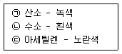
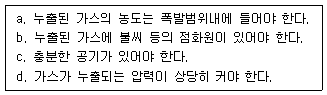

모터그레이더운전기능사 (2005-01-30 기출문제)
1과목: 임의 구분
1. 디젤기관 연료 중에 공기가 흡입될 경우 나타나는 현상은?
- 분사압력이 높아진다.
- 노크가 일어난다.
- 시동이 잘된다.
- 기관 회전이 불량하다.
(정답률: 알수없음)

2. 디젤기관을 시동할 때의 주의사항으로 틀린 것은?
- 기온이 낮을 때는 예열 경고등이 소등되면 시동한다.
- 기관 시동은 각종 조작레버가 중립위치에 있는가를 확인 후 행한다.
- 공회전을 필요 이상 하지 않는다.
- 엔진이 시동되면 적어도 1분 정도는 스타트 스위치에서 손을 떼지 않아야 한다.
(정답률: 알수없음)
3. 다음에서 디젤엔진에 사용되는 과급기의 역할은?
- 출력의 증대
- 윤활성의 증대
- 냉각효율의 증대
- 배기의 정화
(정답률: 알수없음)
4. 가압식 라디에이터의 장점으로 틀린 것은?
- 방열기를 작게 할 수 있다.
- 냉각수의 비등점을 높일 수 있다.
- 냉각수의 순환속도가 빠르다.
- 냉각수 손실이 적다.
(정답률: 알수없음)
5. 예연소실식 연소실에 대한 설명으로 가장 거리가 먼 것은?
- 예열플러그가 필요하다.
- 사용 연료의 변화에 민감하다.
- 예연소실식은 주연소실식보다 작다.
- 분사압력이 낮다.
(정답률: 알수없음)
6. 연료의 세탄가와 직접 관계가 있는 것은?
- 열효율
- 폭발압력
- 착화성
- 인화성
(정답률: 알수없음)
7. 오일 여과기의 점검 사항으로 틀린 것은?
- 여과기가 막히면 유압이 높아진다.
- 엘리먼트 청소는 압축공기를 사용한다.
- 여과 능력이 불량하면 부품의 마모가 빠르다.
- 작업 조건이 나쁘면 교환 시기를 빨리한다.
(정답률: 알수없음)
8. 디젤기관이 작동시 과열되는 원인이 아닌 것은?
- 냉각수 양이 적다.
- 물자킷내의 물때가 많다.
- 온도조절기가 열려 있다.
- 물펌프의 회전이 느리다.
(정답률: 알수없음)
9. 유압식 밸브 리프터의 장점이 아닌 것은?
- 밸브 간극 조정이 필요하지 않다.
- 밸브 개폐시기가 정확하다.
- 구조가 간단하다.
- 밸브 기구의 내구성이 좋다.
(정답률: 알수없음)
10. 디젤엔진이 잘 시동되지 않거나 시동되더라도 출력이 약한 원인은?
- 연료탱크에 공기가 들어 있을 때
- 플라이휠이 마모되었을 때
- 연료분사펌프의 기능이 불량할 때
- 냉각수 온도가 100℃ 정도 되었을 때
(정답률: 알수없음)
11. 엔진 압축압력이 낮을 경우의 원인으로 가장 적당한 것은?
- 압축링이 절손 또는 과마모되었다.
- 배터리의 출력이 높다.
- 연료펌프가 손상되었다.
- 연료 세탄가가 높다.
(정답률: 알수없음)
12. 디젤기관에서만 볼 수 있는 회로는?
- 예열플러그 회로
- 시동 회로
- 충전 회로
- 등화 회로
(정답률: 알수없음)
13. 납산 축전지를 방전하면 양극판과 음극판은 어떻게 변하는가?
- 해면상납으로 바뀐다.
- 일산화납으로 바뀐다.
- 과산화납으로 바뀐다.
- 황산납으로 바뀐다.
(정답률: 알수없음)
14. 전기장치 회로에 사용하는 퓨즈의 재질로 적당한 것은?
- 안티몬 합금
- 구리 합금
- 알루미늄 합금
- 납과 주석 합금
(정답률: 알수없음)
15. AC 발전기에서 다이오드의 역할은?
- 교류를 정류하고 역류를 방지한다.
- 전압을 조정한다.
- 여자 전류를 조정하고 역류를 방지한다.
- 전류를 조정한다.
(정답률: 알수없음)
16. 발전기 출력 및 축전지 전압이 낮을 때의 원인이 아닌 것은?
- 조정 전압이 낮을 때
- 다이오드 단락
- 축전지 케이블 접속 불량
- 충전회로에 부하가 적을 때
(정답률: 알수없음)
17. 12Ｖ 축전지의 구성으로 맞는 것은?
- 셀(shell) 3개를 병렬로 접속
- 셀(shell) 3개를 직렬로 접속
- 셀(shell) 6개를 병렬로 접속
- 셀(shell) 6개를 직렬로 접속
(정답률: 알수없음)
18. 지게차의 운전장치를 조작하는 동작의 설명으로 틀린 것은?
- 전후진 레버를 앞으로 밀면 후진이 된다.
- 틸트레버를 뒤로 당기면 마스트는 뒤로 기운다.
- 리프트 레버를 앞으로 밀면 포크가 내려간다.
- 전후진 레버를 뒤로 당기면 후진이 된다.
(정답률: 알수없음)
19. 모터그레이더(MOTOR GRADER)의 동력 전달장치와 가장 거리가 먼 것은?
- 구동 장치
- 차동 장치
- 변속 장치
- 클러치
(정답률: 알수없음)
20. 기중기의 주행 중 점검 사항으로 가장 거리가 먼 것은?
- 훅의 걸림 상태는 정상인가
- 주행시 붐의 최고 높이는 어떤가
- 종감속기어 오일량은 적당한가
- 붐과 케리어의 간격은 정상인가
(정답률: 알수없음)
2과목: 임의 구분
21. 하부 롤러, 링크 등 트랙부품이 조기 마모되는 원인으로 가장 맞는 것은?
- 일반 객토에서 작업을 하였을 때
- 트랙장력이 너무 헐거울 때
- 겨울철에 작업을 하였을 때
- 트랙장력이 너무 팽팽했을 때
(정답률: 알수없음)
22. 변속기의 필요 조건으로 가장 거리가 먼 것은?
- 회전수를 증가시킨다.
- 기관을 무부하 상태로 한다.
- 역전이 가능하게 한다.
- 회전력을 증대시킨다.
(정답률: 알수없음)
23. 각종 기계장치 및 동력전달장치 계통에서의 안전수칙 중 틀린 것은?
- 벨트를 빨리 걸기위해서 회전하는 풀리에 걸어서는 안된다.
- 기어가 회전하고 있는 곳은 커버를 잘 덮어서 위험을 방지한다.
- 천천히 회전하고 있을 때 벨트를 손으로 잡고 풀리에 걸어야한다.
- 동력 전단기를 사용할 때는 안전방호장치를 장착하고 작업을 수행하여야 한다.
(정답률: 알수없음)
24. 조향기어 백래시가 클 경우 발생될 수 있는 현상은?
- 핸들의 유격이 커진다.
- 조향핸들의 축방향 유격이 커진다.
- 조향각도가 커진다.
- 핸들이 한쪽으로 쏠린다.
(정답률: 알수없음)
25. 지게차의 리프트 실린더의 역할은?
- 마스터를 틸트시킨다.
- 마스터를 이동시킨다.
- 포크를 상승, 하강시킨다.
- 포크를 앞뒤로 기울게 한다.
(정답률: 알수없음)
26. 트랙의 하부 추진장치에 대한 조치사항으로 가장 거리가 먼 것은?
- 트랙의 장력은 25‾0mm로 조정한다.
- 트랙장력 조정은 그리스 주입식이 있다.
- 마멸 및 균열 등이 있으면 교환한다.
- 프레임이 휘면 프레스로 수정하여 사용한다.
(정답률: 알수없음)
27. 일시정지 안전표지판이 설치된 횡단보도에서 위반되는 것은?
- 경찰공무원이 진행신호를 하여 일시정지 하지않고 통과하였다.
- 횡단보도 직전에 일시정지하여 안전을 확인한 후 통과하였다.
- 보행자가 없으므로 그대로 통과하였다.
- 연속적으로 진행 중인 앞차의 뒤를 따라 진행할 때 일 시정지하였다.
(정답률: 알수없음)
28. 검사소에서 검사를 받아야 할 건설기계 중 해당 건설기계가 위치한 장소에서 검사를 할 수 있는 경우가 아닌 것은?
- 도서지역에 있는 경우
- 자체중량이 40ton 이상 또는 축중이 10ton 이상인 경우
- 너비가 2.5m 이상인 경우
- 최고속도가 시간당 35km 미만인 경우
(정답률: 알수없음)
29. 건설기계 관리 및 사업은 어느 법의 적용을 받는가?
- 자동차관리법
- 화물자동차운수사업법
- 건설기계관리법
- 여객자동차운수사업법
(정답률: 알수없음)
30. 최고속도의 100분의 50을 줄인 속도로 운행하여야 할 경우와 관계가 없는 것은?
- 눈이 20mm 이상 쌓인 때
- 비가 내려 노면에 습기가 있는 때
- 노면이 얼어 붙은 때
- 폭우, 폭설, 안개등으로 가시거리가 100m 이내인 때
(정답률: 알수없음)
31. 건설기계를 운전하여 교차로에서 녹색신호로 우회전을 하려고 할 때 지켜야 할 사항은?
- 우회전 신호를 행하면서 빠르게 우회전 한다.
- 신호를 하고 우회전하며, 속도를 빨리하여 진행 한다.
- 신호를 행하면서 서행으로 주행하여야 하며, 보행자가 있을 때는 보행자의 통행을 방해하지 않도록 하여 우회전 한다.
- 우회전은 언제 어느 곳에서나 할 수 있다.
(정답률: 알수없음)
32. 일반도로에서 운전자가 방향을 바꾸려고 할 때의 방향지시 등을 켜야 하는 시기는?
- 회전하려고 하는 지점 전 2m이상
- 회전하려고 하는 지점 전 5m이상
- 회전하려고 하는 지점 전 30m이상
- 자신의 판단대로
(정답률: 알수없음)
33. 다음 중 도로교통법상 술에 취한 상태의 기준은?
- 혈중 알콜농도가 0.⑤% 이상
- 혈중 알콜농도가 0.1% 이상
- 혈중 알콜농도가 0.15% 이상
- 혈중 알콜농도가 0.2% 이상
(정답률: 알수없음)
34. 건설기계의 기종별 기호 표시방법으로 맞지 않는 것은?
- 07:기중기
- 01:아스팔트 살포기
- 03:로우더
- 13:콘크리트 살포기
(정답률: 알수없음)
35. 유압 작동유가 갖추어야 할 성질이 아닌 것은?
- 온도에 의한 점도 변화가 적을 것
- 거품이 적을 것
- 방청, 방식성이 있을 것
- 물, 먼지 등의 불순물과 혼합이 잘될 것
(정답률: 알수없음)
36. 유압장치에 부착되어 있는 오일탱크의 부속장치가 아닌 것은?
- 주입구 캡
- 유면계
- 배플
- 피스톤 로드
(정답률: 알수없음)
37. 유압 압력계의 기호는?
(정답률: 알수없음)
38. 유압펌프의 용량을 나타내는 방법은?
- 주어진 압력과 그 때의 오일 무게로 표시
- 주어진 속도와 그 때의 토출압력으로 표시
- 주어진 압력과 그 때의 토출량으로 표시
- 주어진 속도와 그 때의 점도로 표시
(정답률: 알수없음)
39. 유압 장치의 과부하 방지와 유압기기의 보호를 위하여 최고 압력을 규제하고 유압 회로내의 필요한 압력을 유지하는 밸브는?
- 압력제어 밸브
- 유량제어 밸브
- 방향제어 밸브
- 온도제어 밸브
(정답률: 알수없음)
40. 건설기계에 사용되는 유압 실린더의 구성 부품이 아닌 것은?
- 어큐뮬레이터(축압기)
- 로드
- 피스톤
- 실(seal)
(정답률: 알수없음)
3과목: 임의 구분
41. 유압장치에서 오일에 거품이 생기는 원인이 아닌 것은?
- 오일탱크와 펌프 사이에서 공기가 유입될 때
- 오일이 부족할 때
- 펌프축 주위의 토출측 실(seal)이 손상되었을 때
- 유압유의 점도지수가 클 때
(정답률: 알수없음)
42. 오일 필터의 여과 입도가 너무 조밀하였을 때 가장 발생하기 쉬운 현상은?
- 오일 누출 현상
- 공동 현상
- 맥동 현상
- 블로우바이 현상
(정답률: 알수없음)
43. 유압펌프가 오일을 토출하지 않을 경우는?
- 펌프의 회전이 너무 빠를 때
- 유압유의 점도가 낮을 때
- 흡입관으로부터 공기가 흡입되고 있을 때
- 릴리프 밸브의 설정압이 낮을 때
(정답률: 알수없음)
44. 유압 회로에서 역류를 방지하고 회로내의 잔류압력을 유지하는 밸브는?
- 체크 밸브
- 셔틀 밸브
- 매뉴얼 밸브
- 스로틀 밸브
(정답률: 알수없음)
45. 유압 작동유의 중요 역할이 아닌 것은?
- 일을 흡수한다.
- 부식을 방지한다.
- 습동부를 윤활시킨다.
- 압력에너지를 이송한다.
(정답률: 알수없음)
46. 유압장치의 부품을 교환 후 우선 시행하여야 할 작업은?
- 최대부하 상태의 운전
- 유압을 점검
- 유압장치의 공기빼기
- 유압 오일쿨러 청소
(정답률: 알수없음)
47. 중장비 공장에서 직원에게 헬멧, 작업화, 작업복을 일정하게 착용시키는 이유는?
- 직원의 복장을 통일하기 위하여
- 공장의 미관을 위하여
- 직원의 안전을 위하여
- 직원의 정신 통일을 위하여
(정답률: 알수없음)
48. 운전차에 물건을 실을 때 무거운 물건의 중심 위치는 어느 곳에 두는 것이 안전한가?
- 상부
- 중부
- 하부
- 좌 또는 우측
(정답률: 알수없음)
49. 드라이버(driver)의 올바른 사용법으로 가장 적절하지 않는 것은?
- 날 끝이 재료의 홈에 맞는 것을 사용한다.
- 공작물을 바이스(vise)에 고정시킨다.
- 강하게 조여있는 작은 공작물은 손으로 단단히 잡고 조인다.
- 전기작업시 절연된 손잡이를 사용한다.
(정답률: 알수없음)
50. 안전작업은 복장의 착용상태에 따라 달라진다. 다음에서 권장사항이 되지 않는 것은?
- 땀을 닦기위한 수건이나 손수건을 허리나 목에 걸고 작업해서는 안된다.
- 옷소매는 되도록 폭이 좁게된 것이나, 단추가 달린 것은 되도록 피한다.
- 물체 추락의 우려가 있는 작업장에서는 아무리 덥더라도 작업모를 착용해야 한다.
- 복장을 단정하게 하기 위해 넥타이를 꼭 매야 한다.
(정답률: 알수없음)
51. 다음에서 가스 용기의 도색으로 모두 맞는 것은?

- ㉠
- ㉡, ㉢
- ㉠, ㉢
- ㉠, ㉡, ㉢
(정답률: 알수없음)
52. 산업안전 색채 종류 중 빨간색으로 표시되지 않는 것은?
- 방화표지
- 주의표지
- 금지표지
- 방향표지
(정답률: 알수없음)
53. 작업자가 작업을 할 때 반드시 알아두어야 할 사항이 아닌 것은?
- 안전수칙
- 1인당 작업량
- 기계기구의 성능
- 경영관리
(정답률: 알수없음)
54. 작업장의 승강용 계단을 설치하는 안전한 방법 중 가장 거리가 먼 것은?
- 경사는 30°이하로 완만하게 하는 것이 좋다.
- 구조는 견고하여야 좋다.
- 추락위험이 있는 곳은 손잡이를 90㎝이상 높이로 설치하는 것이 좋다.
- 답단 간격은 동일해야 하지만 답단 넓이는 관계없이 설치하는 것이 좋다.
(정답률: 알수없음)
55. 안전작업 측면에서 장갑을 착용하고 해도 가장 무리가 없는 작업은?
- 연삭 작업을 할 때
- 무거운 물건을 들 때
- 해머 작업을 할 때
- 정밀기계 작업을 할 때
(정답률: 알수없음)
56. 스패너 렌치의 사용법이 잘못된 것은?
- 너트에 맞는 것을 사용한다.
- 스패너를 앞으로 당겨 돌린다.
- 경미한 해머작업에 사용한다.
- 파이프 피팅을 풀고 조일 때 사용 한다.
(정답률: 알수없음)
57. 건설기계에 의한 고압선 주변작업에 대한 설명으로 맞는 것은?
- 작업장비의 최대로 펼쳐진 끝으로부터 전선에 접촉되지 않도록 이격하여 작업한다.
- 작업장비의 최대로 펼쳐진 끝으로부터 전주에 접촉되지 않도록 이격하여 작업한다.
- 전압의 종류를 확인한 후 안전이격거리를 확보하여 그 이내로 접근되지 않도록 작업한다.
- 전압의 종류를 확인한 후 전선과 전주에 접촉되지 않도록 작업한다.
(정답률: 알수없음)
58. 폭 4m 이상, 8m 미만인 도로에 일반 도시가스 배관을 매설시 지면과 도시가스 배관 상부와의 최소 이격거리는?
- 0.6m
- 1.0m
- 1.2m
- 1.5m
(정답률: 알수없음)
59. 굴착장비를 이용하여 도로 굴착작업 중 "고압선 위험" 표지시트가 발견되었다. 다음 중 맞는 것은?
- 표지시트 좌측에 전력케이블이 묻혀 있다.
- 표지시트 우측에 전력케이블이 묻혀 있다.
- 표지시트와 직각방향에 전력케이블이 묻혀 있다.
- 표지시트 직하에 전력케이블이 묻혀 있다.
(정답률: 알수없음)
60. 도시가스가 누출되었을 경우 폭발하는 조건으로 모두 맞는 것은?

- a, b, d
- a, b
- a, c, d
- a, b, c
(정답률: 알수없음)